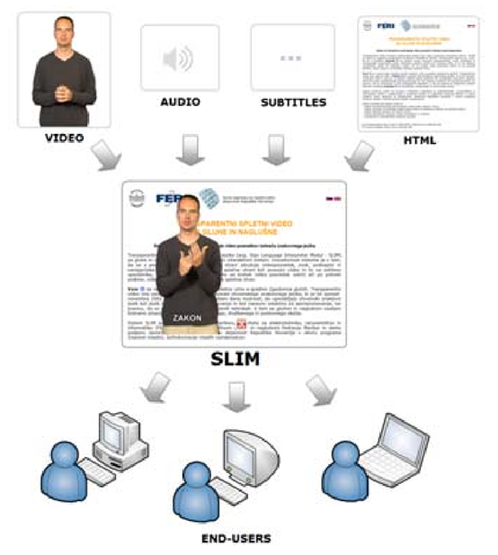

Deafness
Hearing disability is divided into two categories: “deafness” and “hard of hearing”.
Deafness involves “a substantial uncorrectable impairment of hearing in both ears”. “Some deaf individuals' first language is a sign language, and they may or may not be fluent readers of a written language.
To use the Web, people who are deaf may rely on captions for audio content.” (Brewer, 1999)
Barriers that deaf people may encounter online include:
Hard of hearing
“A person with a mild to moderate hearing impairment may be considered hard of hearing.” (Brewer, 1999)
People with impaired hearing may rely on subtitles and audio amplification of audio content when using the Internet. The obstacles encountered on the Internet include:
“lack of captions or transcripts for audio content.” (Brewer, 1999)
According to data collected by the World Federation of the Deaf (WFD), about 80% of the deaf people in the world have insufficient education and/or literacy skills, low language skills and chaotic living conditions. (Debevc, 2009)
People with impaired hearing or deaf disorder will counter a series of troubles when they surf the Internet. In most cases, people with deaf have difficulties when they read text element, as the text is designed based on oral language . Oral languages are strange to the deaf as their first language is sign language (Jensen, 2016). Hence, it is necessary for us to develop tools to solve their problems on the Internet.
In Center for Deaf blindness and Hearing Loss in Aalborg, Denmark, they conducted requisitions of deaf subjects and made the observation. The center has drawn following conclusions:
Useful toolkits
1. Sign Language Interpreter Module:
Debevc (2009) introduces a Sign Language Interpreter Module (SLIM), and this module can offer so sign language video to users.
The function of this tool is 'provides the translation of a specific word, text, image, photo, animation and any other video on the Web.' (Debevc, 2009)
2. Sign language dictionary embedded in browsers:
Center for Deaf blindness and Hearing Loss in Aalborg, Denmark has developed a prototype of a website, which has embedded sign language dictionary and it can translate keywords to sign language. (Jensen, 2016)